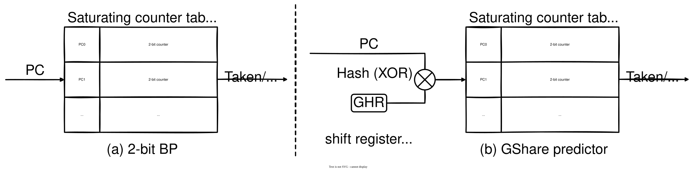
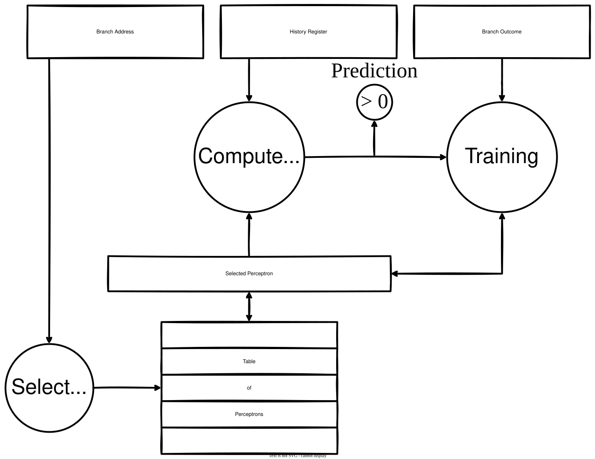

Computer Architecture 2026fall Project 2
By Prof. Jie Zhang
Due: 11:59:59 pm, November 18, 2026
In this project, you will explore the design, implementation, and robustness of branch predictors (BPs) using ChampSim. First, you will familiarize yourself with configuring, building, and creating branch predictor modules under the branch/ directory by following the provided tutorial. Next, by studying common predictor architectures and reading assigned research papers (such as the perceptron branch predictor), you will design and implement your own branch predictors. You will then measure the system performance impact of different configurations and compare your custom predictors against ChampSim’s baseline modules. Finally, you will construct adversarial counter-examples (specifically engineered branch patterns) to attack the predictors and evaluate their worst-case behavior.
Whenever you face trouble or problems with this project, please contact TAs by WeChat or e-mail. All the following information has been verified on Ubuntu 20.04.1 with Linux Kernel 5.15.0 and Ubuntu 22.04.2 LTS with Linux Kernel 5.19.0.
Part 1: Add Branch Predictor in the Configuration Script
In this part, we will configure and build ChampSim with different branch predictors. In ChampSim, branch predictor implementations are located under the branch/ directory.
ChampSim is natively a detailed out-of-order (O3) CPU simulator, so you do not need to manually change the CPU model. To select a specific branch predictor, you can configure the "branch_predictor" field in the build JSON script (lab2_config.json).
Use the course-provided ChampSim package from the repo or PKU Disk (the same course drive linked in Project 1). In this part, compare the three baseline predictors under branch/: local_bp, bimodal, and tournament. From the ChampSim root directory, create lab2_config.json with the following configuration:
{
"executable_name": "champsim",
"ooo_cpu": [
{
"frequency": 4000,
"rob_size": 352,
"branch_predictor": "bimodal",
"btb": "basic_btb",
"mispredict_penalty": 15
}
]
}
To test local_bp or tournament, change "branch_predictor": "bimodal" to "branch_predictor": "local_bp" or "branch_predictor": "tournament" in lab2_config.json.
After updating the JSON file, generate the build files and compile ChampSim. The configuration selects the predictor used by the executable. The course Makefile may still compile other bundled modules:
./config.sh ./lab2_config.json
make -j $(nproc)
Next, let me run the trace files and examine how these branch predictors impact system performance. ChampSim is trace-driven, and trace files are stored in *.champsimtrace.xz format. The course repository includes shell_sort.champsimtrace.xz and spfa.champsimtrace.xz under traces/; run the commands below from the ChampSim root directory. Among the provided workloads, shell_sort and spfa are sensitive to branch predictor performance, while gemm and binary_search are insensitive. For the manual comparisons in Parts 1 to 3, run shell_sort and spfa.
To test the performance of the bimodal predictor, run the following execution commands:
# Run with the compiled bimodal executable
bin/champsim --warmup-instructions 2000000 --simulation-instructions 100000000 traces/shell_sort.champsimtrace.xz
bin/champsim --warmup-instructions 2000000 --simulation-instructions 100000000 traces/spfa.champsimtrace.xz
The process for testing local_bp and tournament is similar: update "branch_predictor" in lab2_config.json, re-compile with ./config.sh and make, and then re-run the trace files using the commands above.
For the manual baseline comparisons in Parts 1 to 3, use 2M warmup + 100M simulation instructions for every predictor on both workloads, as in the commands above. Keep all other simulator settings identical across predictors. The separate local evaluation script and leaderboard evaluation use their own evaluation settings.
After simulation, use the final Region of Interest Statistics (ROI), excluding warmup. Following the course ChampSim statistics implementation, let be the sum of branch counts and the sum of branch misses across direct jumps, indirect branches, conditional branches, direct calls, indirect calls, and returns. Let and be the instruction and cycle counts for the same ROI.
Use the printed overall Branch Prediction Accuracy, MPKI, and CPU 0 cumulative IPC from this ROI summary. These overall branch metrics include all six branch types; the separately printed Branch type MPKI values are per-type breakdowns. Higher Accuracy and IPC are better; lower MPKI is better. Use these definitions throughout Parts 1 to 4.
Please run the two BP-sensitive workloads (shell_sort and spfa) across all three branch predictors. The remaining workloads (gemm and binary_search) are insensitive to BP; you can run them for extra exploration if interested.
In your report, please include figures or tables showing the Branch Prediction Accuracy, MPKI and CPU IPC for the following combinations:
- Branch Predictors:
local_bp,bimodal,tournament - Traces:
shell_sort,spfa - Configuration: Default 1-core configuration with no prefetchers
In total, you need to execute ChampSim six times.
Part 2: Implement a Simple BP
A prediction result of a BP can be 'taken' (represented by 1), which means the branch instruction should take the branch and jump to the branch target, or 'not taken' (represented by 0), which means the branch instruction should not branch. In this part, we will build a simple static branch predictor (simple_bp), which always predicts 'taken'.
ChampSim provides built-in branch predictors in the branch/ directory and modularizes branch predictors purely in C++. Adding a new branch predictor in ChampSim only requires creating a new folder with source files inside the branch/ directory and implementing a few interface functions.
In ChampSim, core structures such as the Branch Target Buffer (BTB) and Return Address Stack (RAS) are handled by the main simulation framework. In this project, your implementation will mainly focus on predicting conditional branch outcomes inside your custom predictor module under branch/ (specifically implementing predict_branch() and last_branch_result()).
To create our simple branch predictor, let's create a new directory named simple_bp under the branch/ directory, and add simple_bp.cc and simple_bp.h inside branch/simple_bp/:
Run the following command from the ChampSim root directory, and keep that directory as your working directory for the remaining commands:
mkdir -p branch/simple_bp
// branch/simple_bp/simple_bp.h
#ifndef BRANCH_SIMPLE_BP_H
#define BRANCH_SIMPLE_BP_H
#include <cstdint>
#include "address.h"
#include "modules.h"
struct simple_bp : champsim::modules::branch_predictor {
using champsim::modules::branch_predictor::branch_predictor;
bool predict_branch(champsim::address ip);
void last_branch_result(champsim::address ip, champsim::address branch_target, bool taken, uint8_t branch_type);
};
#endif
// branch/simple_bp/simple_bp.cc
#include "simple_bp.h"
// Predict whether a branch is taken (1) or not taken (0)
bool simple_bp::predict_branch(champsim::address ip) {
// Always predict 'taken'
return true;
}
// Update predictor state using the actual branch outcome from the trace
void simple_bp::last_branch_result(champsim::address ip, champsim::address branch_target, bool taken, uint8_t branch_type) {
// Static predictor does not update any state.
}
Let's look at the two key interface functions required by ChampSim:
predict_branch(): Called when a branch prediction is needed. This example uses the single-argument interface, receives the branch instruction address (ip), and returnstruefor taken orfalsefor not taken.last_branch_result(): Receives the actual branch outcome (taken) from the trace. Use this callback to update your prediction tables or history registers. In the course implementation, it is called while processing the trace instruction, rather than after simulated branch execution completes.
The module inherits its constructor from champsim::modules::branch_predictor, allowing ChampSim to construct it with the associated CPU. Keep the module directory, class, and source-file names consistent (simple_bp). The declaration and definition of each callback must also use matching signatures. This example follows the upstream branch_predictor module and module interface documentation.
Next, to compile ChampSim with our new simple_bp, set "branch_predictor": "simple_bp" in lab2_config.json:
{
"executable_name": "champsim",
"ooo_cpu": [
{
"frequency": 4000,
"rob_size": 352,
"branch_predictor": "simple_bp",
"btb": "basic_btb",
"mispredict_penalty": 15
}
]
}
Then, generate the build scripts and compile ChampSim:
./config.sh ./lab2_config.json
make -j $(nproc)
After compilation succeeds, run the compiled binary on the two BP-sensitive workloads (shell_sort and spfa):
bin/champsim --warmup-instructions 2000000 --simulation-instructions 100000000 traces/shell_sort.champsimtrace.xz
bin/champsim --warmup-instructions 2000000 --simulation-instructions 100000000 traces/spfa.champsimtrace.xz
Please run two BP-sensitive workloads (shell_sort and spfa) with your implemented simple_bp. In your report, please include figures or tables showing Branch Prediction Accuracy (%), MPKI, and CPU IPC, using the ROI definitions in Part 1, for:
- BP:
simple_bp - Traces:
shell_sort,spfa - Configuration: Default 1-core configuration with no prefetchers
In total, you need to execute ChampSim twice.
Part 3: Read Paper, Implement Your Own Branch Predictor
A Brief Introduction to 2-Bit Local BP and GShare Predictor
Before designing your own branch predictor, we first review two foundational dynamic branch predictors: the 2-bit local BP and the GShare predictor.

As shown in Fig (a) above, the 2-bit local BP contains a table of saturating counters. When a branch instruction is fetched, the BP indexes into the counter table using the instruction's PC. The BP predicts 'taken' if the counter value is 2 (10) or 3 (11), and 'not taken' if the counter value is 0 (00) or 1 (01). When the actual branch outcome is resolved, the corresponding counter in the table is updated: it is incremented by 1 (saturating at 3) if the actual outcome is 'taken', and decremented by 1 (saturating at 0) if 'not taken'.
However, the outcome of a branch is often strongly correlated with the outcomes of other recent branches. A local predictor that relies solely on a single branch's past behavior (like the 2-bit local BP) cannot capture these inter-branch correlations.
To leverage global branch history, the GShare predictor introduces a Global History Register (GHR), as shown in Fig (b) above. The GHR maintains a shift register where each bit represents the outcome of a recent conditional branch instruction (1 for taken, 0 for not taken). When a branch outcome is resolved, the GHR updates via a bitwise shift:
GHR = ((GHR << 1) | outcome) & GHR_MASK;
When indexing into the counter table, GShare XORs (hashes) the instruction's PC with the GHR. This hash ensures that global history is factored into table indexing, allowing the predictor to distinguish between different execution paths leading to the same branch.
A Brief Introduction to Perceptron BP
Now, we introduce the Perceptron Branch Predictor, originally proposed by Jiménez and Lin:
Jiménez, Daniel A. and Calvin Lin. “Dynamic branch prediction with perceptrons.” Proceedings HPCA Seventh International Symposium on High-Performance Computer Architecture (2001): 197-206.
The perceptron BP replaces traditional 2-bit saturating counters with artificial perceptrons. A perceptron is represented as a vector of signed integer weights (), where is a bias weight and correspond to the bits in the GHR.
- Prediction: Instead of checking counter thresholds, the BP selects a perceptron using the branch PC and computes the dot product of its weight vector and the GHR (treating GHR bits as and as ):
If , the BP predicts 'taken' (1); otherwise, it predicts 'not taken' (0).
- Training/Update: Let be the history inputs used for this prediction, and let be the actual outcome. Train the selected perceptron if either the prediction was incorrect OR , where is the training threshold. A correct prediction with low confidence is therefore also trained; an incorrect prediction is trained regardless of confidence.
When training is required, update the bias and history weights:
Thus a history weight increases by 1 when and decreases by 1 otherwise. Use the selected entry, output , and history inputs associated with the original prediction for training. If using bounded weights, saturate updates at the chosen minimum and maximum values. After processing the outcome, update the branch history whether or not training occurred.
Read the paper cited above and summarize its key design in your report. This requirement applies regardless of the architecture you choose for your own predictor.
Designing and Implementing Your Own BP
In this part, you are required to design and implement your custom branch predictor in ChampSim. Your grade for this section will be based on correct functionality, architectural optimizations, and relative performance ranking.
Design Freedom & Ideas
You may use any branch predictor architecture; a perceptron-based design is optional. There are no limits on storage capacity, storage bit-width, history length, or evaluation runtime. Reading and summarizing the assigned perceptron paper remains required regardless of your implementation. Keep the module name my_perceptron for configuration and submission, even if your design uses a different architecture.
Possible design ideas include:
- Hyperparameter Tuning: Finding the optimal global history length , number of perceptrons, and training threshold .
- Improved Hashing Functions: Designing better PC/GHR hashing logic to mitigate aliasing/collisions.
- Hybrid & Local History: Combining global branch history with local history tables (e.g., Perceptron with Local History).
- Storage Organization & Bit-width Choices: Exploring table sizes, entry formats, and weight precision as design choices.
Starter Skeleton
We have provided a code skeleton under the branch/my_perceptron/ directory (my_perceptron.h and my_perceptron.cc). You need to fill in the missing logic in ChampSim's interface functions:
predict_branch(): Select the predictor entry, compute prediction logic (e.g., dot product), and return1('taken') or0('not taken').last_branch_result(): Update predictor state and branch history using the actual outcome, according to your chosen architecture.
If you are unsure how to manage branch history or table indexing in ChampSim, you can check built-in predictors in the branch/ directory (such as gshare/ or bimodal/) for reference.
Compiling and Running
To compile ChampSim with your custom BP, update "branch_predictor": "my_perceptron" in lab2_config.json, then build and run:
# 1. Update lab2_config.json to set "branch_predictor": "my_perceptron"
./config.sh --no-compile-all-modules ./lab2_config.json
make -j $(nproc)
# 2. Run test traces
bin/champsim --warmup-instructions 2000000 --simulation-instructions 100000000 traces/shell_sort.champsimtrace.xz
bin/champsim --warmup-instructions 2000000 --simulation-instructions 100000000 traces/spfa.champsimtrace.xz
Local Evaluation with auto-run.py
Download auto-run.py from the course-provided PKU Disk and place it in the root directory of your ChampSim checkout. From that directory, run:
python3 ./auto-run.py
Complete your my_perceptron implementation before running the script. Run it directly inside the prepared ChampSim environment. It reads lab2_config.json first (or branch_config.json if the former is absent); --config selects a different configuration explicitly. The script selects bimodal and my_perceptron itself and does not modify your original JSON file. On the first run, it generates and caches bimodal baseline results under baseline/; subsequent runs reuse valid cached results and evaluate my_perceptron. The candidate predictor is compiled once per invocation. The first full evaluation runs 14 baseline simulations and 14 candidate simulations; subsequent evaluations run only the 14 candidate simulations when the cache is valid. Each uses 2M warmup + 100M simulation instructions. Use --max-worker to control the number of concurrent trace simulations according to your machine's resources. For example, to use four workers:
python3 ./auto-run.py --max-worker 4
Ensure that traces/ contains all 14 files below (provided in the course repository traces/):
pred-1-1.champsimtrace.xz
pred-1-2.champsimtrace.xz
pred-2-1.champsimtrace.xz
pred-2-2.champsimtrace.xz
pred-2-3.champsimtrace.xz
pred-2-4.champsimtrace.xz
pred-2-5.champsimtrace.xz
pred-2-6.champsimtrace.xz
pred-3-1.champsimtrace.xz
pred-4.champsimtrace.xz
pred-5.champsimtrace.xz
pred-6.champsimtrace.xz
403.gcc-48B.champsimtrace.xz
657.xz_s-56B.champsimtrace.xz
Keep the default trace list and instruction counts when comparing against the threshold.
The evaluation result is printed directly to the terminal as JSON containing a score field. For example:
{"score": 111000}
Progress is printed to stderr. Configuration, build logs, per-trace outputs, and detailed results are saved under .auto-run/run-*/; inspect these logs if a run fails. --output-file ./local-result.json also saves detailed results to a named JSON file. The script prints a score only when all requested traces complete successfully. Its uniquely named binaries are separate from the manually built bin/champsim.
The value of score is used for the Local Evaluation grading item below. A score strictly greater than 110000 earns 2 points. For scores at or below 110000, teaching assistants will determine partial credit by assessing the gap from this threshold; a larger gap results in fewer points.
Leaderboard Evaluation
The leaderboard is a separate evaluation from the local auto-run.py grading item. It evaluates your predictor on seven traces:
- Public:
403.gcc-48B.champsimtrace.xzand657.xz_s-56B.champsimtrace.xz. - Hidden: Five additional evaluation traces.
Leaderboard positions are determined by the score from this seven-trace evaluation, independently of the local auto-run.py score. The leaderboard awards up to 2 grading points according to rank; these points are separate from the up to 2 points for the local evaluation threshold.
For participants and competition rank (rank 1 is best), the band number is , and the awarded points are . Tied participants use the same , even across a band boundary.
Log in to the online evaluation platform, find the branch prediction assignment (分支预测实验), and submit all files inside branch/my_perceptron/, without submitting the directory itself. After evaluation completes, you can view your score, including results from the hidden traces, on the platform. Your initial username is your student ID, and your initial password is your name's lowercase pinyin initials repeated twice, followed by 1234. For example, Zhang San (张三), whose student ID is 2500000001, logs in with username 2500000001 and initial password zszs1234.
The leaderboard uses the same score calculation method as auto-run.py; only the evaluation traces differ.
Use shell_sort and spfa for the baseline comparisons. The local auto-run.py evaluation and the seven-trace leaderboard evaluation described above are separate grading items. Part 3 is worth 13 points in total:
- Paper Summary (5 pts): A comprehensive summary covering motivations, challenges, and architectural designs. Each missing key section incurs a 1-point deduction.
- Custom BP Implementation & Performance (8 pts):
- Functionality & Correctness (2 pts): Compilable and functionally correct predictor code that completes simulation runs without errors.
- Baseline Performance (2 pts): Performance surpassing
simple_bp, with neither significantly lower IPC nor significantly higher MPKI than any oflocal_bp,bimodal, andtournamenton each ofshell_sortandspfa. Judge IPC and MPKI separately for each workload; a good result on one workload does not compensate for a significantly worse result on the other. Teaching assistants will assess whether a performance difference is significant by considering IPC and MPKI together on each workload; no fixed percentage cutoff is prescribed. This grading item does not usescore. - Local Evaluation (up to 2 pts): A
scorestrictly greater than110000fromauto-run.pyearns 2 points. For scores at or below110000, teaching assistants will determine partial credit based on the gap from this threshold, as described above. - Leaderboard Ranking (up to 2 pts): Rank is determined by the score on the two public leaderboard traces and five hidden traces listed above. Sort by evaluation score from highest to lowest and divide rank positions into 20 approximately equal-sized bands. The highest band earns 2.0 points, and each subsequent band earns 0.1 points less, down to 0.1 points for the lowest band. Tied scores share the same rank and points, using competition ranking (e.g., 1, 2, 2, 4).
Please evaluate your implemented my_perceptron predictor against all baselines.
In your report, please include:
-
Paper Summary: A concise summary (1–2 pages) covering the motivations, key challenges, and perceptron design/training mechanisms described in the Jiménez & Lin paper.
-
Custom BP Design Details: Explain your specific implementation, architectural choices, indexing or hashing logic, parameter selections (e.g., history lengths, table sizes, and any training thresholds), and any extra optimizations you added.
-
Performance Evaluation & Comparison: Draw bar charts comparing Accuracy (%), MPKI, and CPU IPC of
my_perceptron,simple_bp,local_bp,bimodal, andtournamenton bothshell_sortandspfa. Use separate charts or panels for each metric, show both workloads explicitly, and label axes, units, and predictor names. Use 2M warmup + 100M simulation instructions, identical simulator settings, and the ROI metric definitions in Part 1. Discuss IPC and MPKI on each workload separately. -
Local Evaluation Result: Include the terminal output containing
scorefromauto-run.pyin your report. Use the default 14-trace suite with 2M warmup + 100M simulation instructions.
Files to submit:
- Source code: Files under
branch/my_perceptron/(my_perceptron.handmy_perceptron.cc). - Lab report: PDF file including the paper summary, design details, and performance analysis.
Part 4: Crafting a Hard Trace Benchmark for Branch Prediction
In this part, you will flip your role from a hardware designer to a software/workload developer. You are required to design, compile, and generate a custom ChampSim trace that serves as a stress test for branch predictors.
Background & Objective
Standard benchmarks like sorting or matrix multiplication often exhibit regular loops and repetitive control flow patterns. However, real-world software—such as database indexing, cryptosystems, binary parsers, and graph analytics—contains complex, data-dependent, and highly unpredictable branch behavior.
The workload must be written in C only. Your goal is to write a C program featuring intricate control flow that maximizes branch prediction difficulty, compile it, and collect a trace file using ChampSim's trace collection tools.
Guidelines for Designing Unpredictable Workloads
To create a high-difficulty trace that forces frequent mispredictions across standard predictors, consider incorporating:
- Data-Dependent Branches: Branches whose outcomes depend on unpredictable data (e.g., pseudo-random number generators, cryptographic hashes, or Collatz conjecture sequences).
- Long-History Dependencies: Control flow patterns where branch outcomes correlate with events that happened beyond typical global history lengths ().
- Irregular Memory & Pointer Chasing: Unstructured graph traversals (e.g., BFS/DFS on sparse graphs, skip lists, or unbalanced tree searches).
- High-Entropy Conditional Statements: Interleaved conditional logic that induces heavy aliasing (collisions) in branch target/predictor tables.
Installing Intel PIN
If you are using the course-provided Docker image, Intel PIN is already installed at /pin-external-4.3-99850-gce5652921-gcc-linux. Set PIN_ROOT as follows and skip the remaining installation steps in this section:
export PIN_ROOT=/pin-external-4.3-99850-gce5652921-gcc-linux
Set PIN_ROOT again whenever you open a new terminal.
Use the course-provided Linux x86-64 ChampSim package. The commands below require GCC (gcc for the C workload and g++ for the tracer), GNU Make, wget, tar, and xz.
Create the installation directory before downloading Intel PIN so that the archive and extraction commands use the same directory:
mkdir -p "$HOME/tools"
cd "$HOME/tools"
wget https://software.intel.com/sites/landingpage/pintool/downloads/pin-external-4.3-99850-gce5652921-gcc-linux.tar.gz
tar -xzf pin-external-4.3-99850-gce5652921-gcc-linux.tar.gz
export PIN_ROOT="$HOME/tools/pin-external-4.3-99850-gce5652921-gcc-linux"
test -x "$PIN_ROOT/pin"
PIN_ROOT must point to the extracted package directory containing pin and source/. If your downloaded package has a different directory name, adjust PIN_ROOT accordingly. Set this variable again when opening a new terminal.
Building the ChampSim Tracer
Return to your ChampSim root directory. Replace /path/to/ChampSim below with the actual path to your course-provided checkout:
cd /path/to/ChampSim
make -C tracer/pin
ls -l tracer/pin/obj-intel64/champsim_tracer.so
The shared library tracer/pin/obj-intel64/champsim_tracer.so is the tool that PIN loads to record ChampSim traces. The build command follows the official tracer instructions. Keep the ChampSim root directory as your working directory for all remaining commands.
Compiling Your Workload
Save your workload as hard_workload.c in the ChampSim root directory, then compile and run it:
gcc -O2 -std=c11 hard_workload.c -o hard_workload
./hard_workload
If your program requires arguments, supply them both in this test run and after ./hard_workload in the tracing command below.
Verify that the program performs its intended computation and runs without crashing. It must execute enough instructions to produce a full 200M-instruction trace. Compiler optimizations may remove unused computations or replace conditional branches, so check that the compiled workload retains the control flow you intend to evaluate. Record your compiler options and program arguments in the report for reproducibility.
Capturing and Compressing the Trace
A 200M-instruction trace in the course format occupies 12.8 GB before compression. Ensure that the trace output location has enough free disk space for the raw trace and compressed output.
Capture and submit 200 million instructions (200,000,000 / 200M). Evaluation uses 2M warmup instructions followed by 100M simulation instructions from this trace; grading metrics exclude warmup.
Set STUDENT_ID to your actual student ID. The following example writes the trace directly into traces/:
STUDENT_ID=123456789
mkdir -p traces
"$PIN_ROOT/pin" -t tracer/pin/obj-intel64/champsim_tracer.so -o "traces/${STUDENT_ID}_hard.champsimtrace" -s 0 -t 200000000 -- ./hard_workload
Here, the first -t loads the tracer library; the second -t 200000000 sets the number of instructions to capture. -s 0 starts recording without skipping instructions. The -- separates PIN/tracer options from your workload command. Check that tracing completes at the requested instruction count; a program that exits early may produce a shorter trace and must be adjusted before submission.
Compress the trace and check the compressed file's integrity:
xz -z -T0 "traces/${STUDENT_ID}_hard.champsimtrace"
xz -t "traces/${STUDENT_ID}_hard.champsimtrace.xz"
ls -lh "traces/${STUDENT_ID}_hard.champsimtrace.xz"
xz -z replaces the uncompressed trace with its compressed .xz file. xz -t checks compression integrity; it does not check the instruction count or whether ChampSim can simulate the trace. The final filename must be <student_id>_hard.champsimtrace.xz, with <student_id> replaced by your actual student ID.
Validating with ChampSim
In lab2_config.json, set "branch_predictor": "bimodal", then configure and build the simulator from the ChampSim root directory:
./config.sh ./lab2_config.json
make -j $(nproc)
bin/champsim --warmup-instructions 2000000 --simulation-instructions 100000000 "traces/${STUDENT_ID}_hard.champsimtrace.xz"
Ensure that the simulation completes without crashing. Record MPKI, Prediction Accuracy, and CPU IPC from the 100M simulation phase after 2M warmup instructions. This validation uses the same predictor and instruction lengths as the Part 4 hardness evaluation. Submit the full compressed 200M-instruction trace, even though grading uses only 100M simulation instructions.
All submitted traces will be benchmarked against the baseline predictor (bimodal) using 2M warmup + 100M simulation instructions. Only statistics from the 100M simulation phase are used for grading. Part 4 is worth 4 points in total:
- Source Code & Trace Validity (2 pts): Valid C source code and a properly formatted 200M-instruction trace file (
.champsimtrace.xz) that runs without crashing. - Trace Hardness (up to 2 pts): Measured by Branch Mispredictions Per Kilo-Instructions (MPKI) on
bimodal:- MPKI >= 300: 2 points.
- MPKI < 300: 2 × MPKI / 300 points, proportional to the achieved MPKI.
- Fairness & Validity: Random-number-driven workloads and loops deliberately designed to create hard-to-predict branches are allowed, including synthetic stress tests. Empty loops that perform no meaningful computation, inline assembly traps, and code causing segmentation faults or other crashes during tracing will be disqualified.
For Part 4, please submit the following items:
- Workload Source Code: Your C source code used to generate the hard trace (e.g.,
hard_workload.c). - Trace File: Compressed 200M-instruction trace file named strictly as
<student_id>_hard.champsimtrace.xz. - Report Section: In your lab report, include:
- Control Flow Design: Describe the mechanisms and algorithms used in your program to trick branch predictors.
- Benchmark Results: A table showing the MPKI, Prediction Accuracy, and CPU IPC of
bimodalduring the 100M simulation phase on your submitted 200M-instruction trace, following 2M warmup instructions.
Submission
- Please submit the deliverables for each part in order, clearly structured in a report form (PDF format). You NEED to submit your report, source codes, custom trace file, technical documentation, and paper summary.
- Pack all your submission files into a single archive (
.zipor.tar.gz) and submit it as an attachment at course.pku.edu.cn. The title of the attachment and archive should follow the format:Student-ID_Name_Proj2(e.g.,123456789_WangXiaoming_Proj2). - You can also send the archive to 2501112042@stu.pku.edu.cn. The titles of your email AND attachment must both be
Student-ID_Name_Proj2. - DO NOT PLAGIARIZE. We will randomly select 10 students for an oral defense and Q&A session regarding their implementations and trace designs.
- You are allocated 3 slip days in total (shared across all course projects), which can be used to extend project deadlines (e.g., 1 project extended by 3 days, or 3 projects each extended by 1 day).
- All projects are strictly due at 23:59:59 on the deadline date. No exceptions.
- Late submissions without slip days will incur a 20% penalty per day (1 second late = 1 hour late = 1 day late).
Your submitted package must contain the following components:
- Lab Report (
Report.pdf):- Part 1 & 2 Evaluation: Figures or tables showing Branch Prediction Accuracy (%), MPKI, and CPU IPC for built-in predictors (
local_bp,bimodal,tournament) and yoursimple_bponshell_sortandspfatraces. - Part 3 Paper Summary: A 1–2 page summary of the Jiménez & Lin paper covering motivations, key challenges, and perceptron mechanisms.
- Part 3 Technical Documentation: Detailed explanation of your custom
my_perceptronarchitecture, parameter selection (e.g., history lengths, table sizes, and any training thresholds), and any optimization techniques used. Any predictor architecture is allowed, with no limits on storage capacity, storage bit-width, history length, or evaluation runtime. - Part 3 Performance Comparison: Bar charts comparing Accuracy (%), MPKI, and CPU IPC for
my_perceptron,simple_bp,local_bp,bimodal, andtournamenton each ofshell_sortandspfa. Use separate charts or panels for the metrics, 2M warmup + 100M simulation instructions, identical simulator settings, and the ROI definitions in Part 1. Label axes, units, and predictor names, and discuss IPC and MPKI separately for both workloads. - Part 3 Local Evaluation Result: Include the terminal output containing
scorefromauto-run.py, using the default 14-trace suite with 2M warmup + 100M simulation instructions. - Part 4 Hard Trace Analysis: Detailed description of your workload design and control-flow mechanisms, plus a table of MPKI, Prediction Accuracy, and CPU IPC for
bimodalusing 2M warmup + 100M simulation instructions from your 200M-instruction trace. Report statistics from the simulation phase, excluding warmup.
- Part 1 & 2 Evaluation: Figures or tables showing Branch Prediction Accuracy (%), MPKI, and CPU IPC for built-in predictors (
- Source Codes:
branch/simple_bp/: Code files (simple_bp.handsimple_bp.cc).branch/my_perceptron/: Code files (my_perceptron.handmy_perceptron.cc).hard_workload.c: Source code used to generate your Part 4 hard trace. Only C is allowed for the Part 4 workload.
- Hard Trace File:
<student_id>_hard.champsimtrace.xz: Your compressed 200M-instruction trace file for Part 4. Evaluation uses 2M warmup + 100M simulation instructions from this trace.
Your final score for Project 2 will be calculated based on the following breakdown:
- Part 1 & 2: Baseline & Simple BP Evaluation (3 pts)
- 3 pts: Reasonable performance statistics (Accuracy, MPKI, and IPC) provided for
local_bp,bimodal,tournament, andsimple_bpon standard workloads.
- 3 pts: Reasonable performance statistics (Accuracy, MPKI, and IPC) provided for
- Part 3: Perceptron Paper Summary (5 pts)
- 5 pts: Comprehensive summary covering motivations, challenges, and architectural designs (Lack of any key section: -1 pt each).
- Part 3: Custom BP Implementation & Performance Ranking (8 pts)
- 2 pts: Compilable and functionally correct
my_perceptroncode that passes simulation runs without errors. - 2 pts: Performance surpassing
simple_bp, with neither significantly lower IPC nor significantly higher MPKI than any oflocal_bp,bimodal, andtournamenton each ofshell_sortandspfa. Judge IPC and MPKI separately for each workload; a good result on one workload does not compensate for a significantly worse result on the other. Teaching assistants will assess whether a performance difference is significant by considering IPC and MPKI together on each workload; no fixed percentage cutoff is prescribed. This grading item does not usescore. - Up to 2 pts: A
scorestrictly greater than110000from the localauto-run.pyearns 2 points. For scores at or below110000, teaching assistants will determine partial credit by assessing the gap from this threshold; a larger gap results in fewer points. See Part 3 for download and execution instructions. - Up to 2 pts: Leaderboard ranking based on the score from
403.gcc-48B.champsimtrace.xz,657.xz_s-56B.champsimtrace.xz, and five hidden traces. This evaluation is independent of the localauto-run.pyscore. Sort by evaluation score from highest to lowest and divide rank positions into 20 approximately equal-sized bands. The highest band earns 2.0 points, and each subsequent band earns 0.1 points less, down to 0.1 points for the lowest band. Tied scores share the same rank and points, using competition ranking (e.g., 1, 2, 2, 4). See Part 3 for the exact band formula.
- 2 pts: Compilable and functionally correct
- Part 4: Hard Trace Benchmark & Stress Test (4 pts)
- 2 pts: Valid C source code and properly formatted 200M-instruction trace file (
.champsimtrace.xz) that runs without crashing with 2M warmup + 100M simulation instructions. - Up to 2 pts: Trace hardness based on MPKI on the baseline predictor (
bimodal) during the 100M simulation phase after 2M warmup instructions. MPKI >= 300 earns 2 points; otherwise, the score is 2 × MPKI / 300 points.
- 2 pts: Valid C source code and properly formatted 200M-instruction trace file (
Appendix: Perceptron BP Method Brief Description
The overall structure of a perceptron BP is shown below:

The Select Entry step is to hash the PC. The hash can be XORing PC with the GHR or other methods. Each perceptron contains signed integer weights, , including the bias . When predicts, the BP computes: where the is the bias, is the -th bit of GHR (value '0' is regarded as '-1' when multiply). If , the prediction will be 'take', and vice versa. Define the predicted outcome as when and otherwise, including the taken prediction at . Set so that the same update rule includes the bias. When the actual branch outcome is known, train the perceptron used for this prediction as follows:
if or
for in # also update bias
end for
end if
where is the actual outcome, set for 'taken' and for 'not taken'. is the threshold.
The two training conditions are joined by OR: either condition is sufficient. The bias update is , since . Use the entry, output, and history inputs from the original prediction; saturate updates if weights have bounded ranges. Update branch history after processing the outcome, even when no weight update is needed.